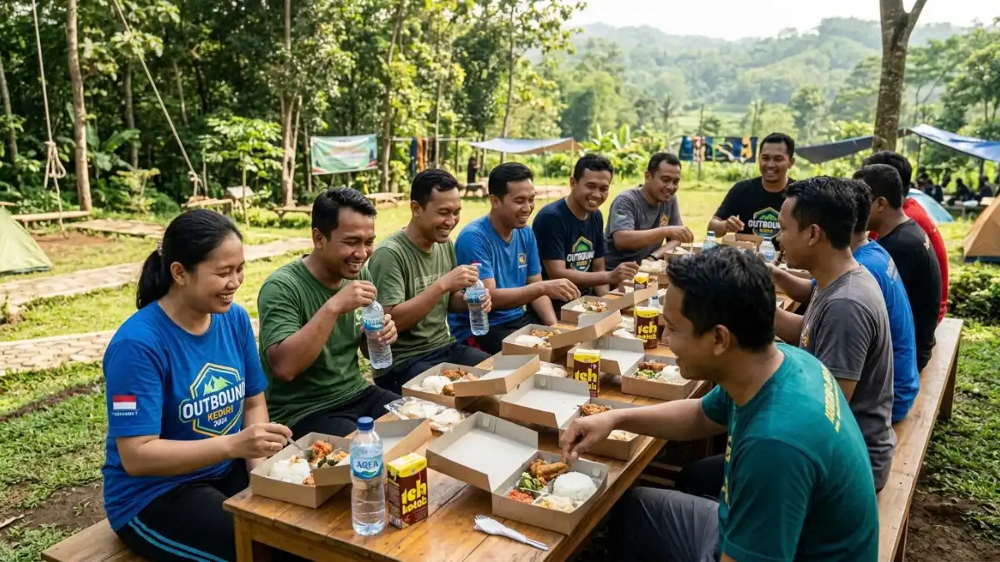

Panitia sedang menghitung dan merencanakan anggaran serta komponen biaya outbound di kawasan lereng Wilis Kediri. (Ilustrasi)
Panitia sedang menghitung dan merencanakan anggaran serta komponen biaya outbound di kawasan lereng Wilis Kediri. (Ilustrasi)
Biaya outbound di lereng Wilis Kediri bergantung pada jumlah peserta, durasi, fasilitas, fasilitator, konsumsi, transportasi, dan waktu kunjungan, sehingga tarif perlu dikonfirmasi langsung ke pengelola.
DAFTAR ISI
- 1. Apa saja komponen biaya outbound di lereng Wilis Kediri?
- 2. Faktor apa yang membuat biaya outbound berbeda di tiap lokasi?
- 3. Bagaimana cara meminta penawaran biaya yang jelas?
- 4. Bagaimana menyusun anggaran outbound tanpa mengorbankan keselamatan?
- 5. Kapan waktu terbaik untuk memesan agar anggaran lebih terkendali?
- 6. Apa kesalahan umum saat menghitung biaya outbound?
- FAQ
1. Apa saja komponen biaya outbound di lereng Wilis Kediri?
Komponen utamanya adalah tiket masuk atau sewa area, jasa fasilitator, konsumsi, transportasi, perlengkapan kegiatan, dan asuransi atau perlengkapan keselamatan bila diperlukan.
Tiket masuk atau sewa area dibayarkan kepada pengelola lokasi, misalnya area camping atau kawasan wisata alam.
Jasa fasilitator mencakup perancangan kegiatan, pemanduan permainan, dan sesi refleksi. Konsumsi meliputi makan dan minuman selama kegiatan.
Transportasi mencakup sewa bus atau kendaraan pengumpan bila jalan menuju lokasi tidak dapat dilalui kendaraan besar.
Perlengkapan kegiatan bisa berupa tali, penanda, atau alat permainan. Komponen keselamatan meliputi kotak pertolongan pertama dan, bila relevan, perlengkapan pelindung.
Tidak semua komponen wajib ada. Gathering santai di area wisata mungkin hanya membutuhkan tiket, konsumsi, dan transportasi, sedangkan program team building lengkap memerlukan fasilitator.
2. Faktor apa yang membuat biaya outbound berbeda di tiap lokasi?
Perbedaan biaya dipengaruhi jumlah peserta, durasi, jenis fasilitas, tingkat kesulitan kegiatan, kebutuhan menginap, jarak, dan apakah kegiatan dilakukan pada hari biasa atau libur.
Jumlah peserta memengaruhi kebutuhan konsumsi, fasilitator, dan luas area. Durasi menentukan apakah cukup setengah hari atau perlu menginap. Kegiatan menginap menambah biaya area camping, tenda, dan konsumsi tambahan.
Jenis fasilitas juga berperan. Area dengan toilet, tempat parkir, dan warung tentu berbeda dengan area yang minim fasilitas.
Kegiatan yang membutuhkan pengamanan lebih, seperti aktivitas di sekitar air, biasanya memerlukan lebih banyak pendamping.
Faktor waktu tidak kalah penting. Menurut Lingkar Wilis pada Mei 2026, pendapatan asli daerah dari pariwisata Kabupaten Kediri pada triwulan I 2026 mencapai sekitar Rp1,1 miliar, naik dari Rp746.276.000 pada periode yang sama tahun sebelumnya, dan kenaikan itu dikaitkan dengan libur panjang serta libur Lebaran 2026.
Pada masa ramai seperti itu, lokasi cepat terisi dan pengelola dapat memberlakukan ketentuan berbeda.
3. Bagaimana cara meminta penawaran biaya yang jelas?
Cara terbaik adalah mengirim permintaan tertulis berisi tanggal, jumlah peserta, durasi, jenis kegiatan, kebutuhan menginap, dan meminta rincian komponen yang termasuk serta tidak termasuk.
Sebutkan usia dan profil peserta agar pengelola dapat menyarankan kegiatan yang sesuai. Tanyakan apakah tiket masuk sudah termasuk dalam paket.
Tanyakan pula apakah ada biaya tambahan, misalnya parkir, kebersihan, atau listrik untuk area camping.
Minta penawaran dari lebih dari satu pengelola atau fasilitator agar bisa dibandingkan. Bandingkan bukan hanya angka akhir, tetapi juga isi paket, jumlah pendamping, dan ketentuan pembatalan.
Simpan seluruh kesepakatan secara tertulis, termasuk jadwal, batas waktu pembayaran, dan ketentuan perubahan jadwal karena cuaca.
Dokumen ini melindungi kedua belah pihak bila terjadi perbedaan pemahaman.
4. Bagaimana menyusun anggaran outbound tanpa mengorbankan keselamatan?
Susun anggaran dengan memprioritaskan komponen keselamatan dan fasilitator lebih dulu, lalu hemat pada elemen tambahan seperti suvenir atau dekorasi.
Mulailah dari komponen wajib: lokasi, konsumsi, transportasi, dan keselamatan. Tambahkan dana cadangan, misalnya sekitar sepuluh persen dari total anggaran, untuk kebutuhan tak terduga. Persentase ini bersifat umum dan dapat disesuaikan.
Penghematan yang aman dapat dilakukan dengan memilih hari biasa, memakai konsumsi dari warung dan UMKM setempat, atau menggabungkan kendaraan.

Persiapan konsumsi makanan dan minuman untuk para peserta kegiatan outbound di lereng gunung. (Ilustrasi)Jangan menghemat pada pendamping, perlengkapan pertolongan pertama, dan briefing keselamatan.
Hindari memilih penawaran termurah tanpa memeriksa isinya. Harga yang jauh lebih rendah dapat berarti jumlah pendamping berkurang atau fasilitas tidak lengkap.
5. Kapan waktu terbaik untuk memesan agar anggaran lebih terkendali?
Waktu terbaik adalah memesan beberapa minggu sebelumnya dan memilih hari kerja di luar libur panjang, karena permintaan cenderung lebih rendah dan pilihan tanggal lebih longgar.
Data Disparbud Kabupaten Kediri yang dilaporkan Koran Memo pada Juni 2026 menunjukkan 38.198 kunjungan wisata selama libur panjang 27 Mei sampai 1 Juni 2026.
Kepadatan seperti ini membuat ketersediaan area dan parkir menjadi lebih ketat.
Bila memungkinkan, pilih hari biasa untuk kegiatan yang tidak terikat kalender.
Konfirmasi ulang beberapa hari sebelum berangkat, terutama pada musim hujan, untuk memastikan jadwal dan kondisi lokasi.
6. Apa kesalahan umum saat menghitung biaya outbound?
Kesalahan umum adalah hanya membandingkan harga akhir, melupakan biaya tersembunyi, tidak menyiapkan dana cadangan, dan tidak menghitung transportasi tambahan menuju lokasi.
Banyak panitia membandingkan penawaran tanpa memeriksa isi paket. Akibatnya, komponen seperti konsumsi atau tiket ternyata belum termasuk.
Kesalahan lain adalah lupa menghitung kendaraan pengumpan bila bus besar tidak dapat mencapai titik akhir.
Untuk gambaran lokasi yang relevan, baca tempat outbound yang ada di lereng Wilis Kediri. Untuk menyesuaikan kegiatan dengan anggaran, baca aktivitas outbound di lereng Wilis Kediri.